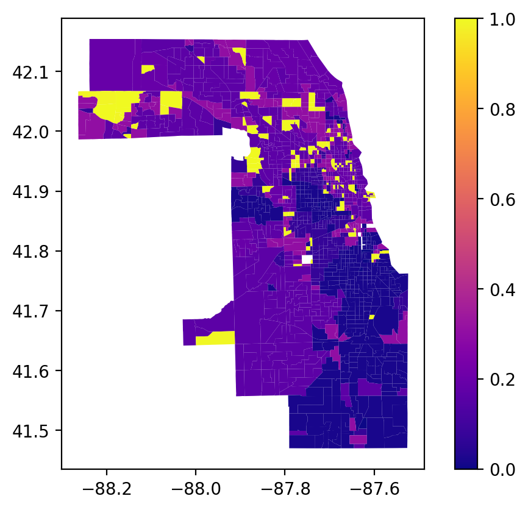

The geosnap package is designed for geodemographic analysis and regionalization applied to longitudinal data. Following those analyses, it also provides tools for modeling neighborhood composition into the future using spatial and temporal transition rules learned from the past.
Code
%load_ext watermark%watermark -v -a "author: eli knaap"-d -u -p segregation,libpysal,geopandas,geosnap
Author: author: eli knaap
Last updated: 2024-01-23
Python implementation: CPython
Python version : 3.11.0
IPython version : 8.18.1
segregation: 2.5
libpysal : 4.9.2
geopandas : 0.14.2
geosnap : 0.12.1.dev9+g3a1cb0f6de61.d20240110
from geosnap.visualize import plot_timeseries, animate_timeseries
Code
import geopandas as gpd
6.1 Examining Data
Code
store = DataStore()
The DataStore class provides access to hundreds of neighbrohood indicators for the U.S. collected from federal agencies. We store these datasets in the cloud and stream them on demand. But if you plan on doing repeated analyses you can store the data locally (which we’ve already done on the JupyterHub)
Code
chicago = get_acs(store, county_fips='17031', level='tract', years=list(range(2013, 2017))) # without specifying a subset of years, we get everything
/Users/knaaptime/Dropbox/projects/geosnap/geosnap/io/constructors.py:188: UserWarning: `constant_dollars` is True, but no `currency_year` was specified. Resorting to max value of 2016
warn(
There are also convenient plotting methods for looking at change over time. A useful feature here is that the choropleth bins are the same for each time period, making it easy to see change over time
/Users/knaaptime/Dropbox/projects/geosnap/geosnap/visualize/mapping.py:170: UserWarning: `proplot` is not installed. Falling back to matplotlib
warn("`proplot` is not installed. Falling back to matplotlib")
Still it can be difficult to see minute changes across the various maps. The animate_timeseries function can make it easier to see what’s happening, like the steady income decline in Midlothian near the southern edge of the region
Note here that we’re comparing overlapping samples from the ACS 5-year survey, which the Census Bureau recommends against. Here it just makes a good example :)
6.2 Modeling Neighborhood Types
With geosnap, it’s possible to look at temporal geodemographics without writing much code. Under the hood, the package provides tools for scaling each dataset within its own time period, adjusting currency values for inflation, and ensuring that times, variables, and geometries stay aligned properly. Together those tools make it easy to explore how different portions of the region transition into different neighborhood types over time, and if desired, model the evolution of neighborhood change as a spatial Markov process.
Any variables could be used to examine neighborhood transitions, but we’ll return to the simple set of sociodemographic veriables used before to understand if/how patterns of racial and socioeconomic segregation and neighborhood partitioning unfold over time
/Users/knaaptime/Dropbox/projects/geosnap/geosnap/visualize/mapping.py:170: UserWarning: `proplot` is not installed. Falling back to matplotlib
warn("`proplot` is not installed. Falling back to matplotlib")
The vast majority of tracts are assigned to the same geodemographic type in each time period, but some transition into different types over time. The ones that do transition tend to be those on the edges of large contiguous groups (i.e. change tends to happen along the periphery and move inward, implying a certain kind of spatial dynamic)
Chicago Neighborhood Types
Once we have a temporal geodemographic clustering solution, then the data are represented as a long-form geodataframe with the neighborhood cluster label as one of the attributes. For each observation, then, the neighborhood label is arranged as a sequence of discrete types which can be modeled as a first-order Markov process using giddy, or using sequence analysis
Each observation is given its own silhouette score to identify potential spatial outliers, or the measures can be summarized to provide an aggregate statistic
With the cluster model in hand, each census tract is represented as a series of neighborhood types over time (i.e. what we plotted above). To understand which neighborhoods have experienced the most change, the ModelResults class implements a method called “LINCS”, the Local Indicator of Neighborhood Change. The lincs attribute measures how often a given spatial unit shares its cluster assignment with the other units over time.
If a “neighborhood” is grouped with many different neighborhoods over time (rather than joining a single group with the same members repeatedly), then it shows more variation and thus a higher LINC score
Code
chi_lincs = chi_model.lincs
Code
chi_lincs
geoid
geometry
2013
2014
2015
2016
linc
0
17031010100
MULTIPOLYGON (((-87.67720 42.02294, -87.67628 ...
0.0
0.0
0.0
0.0
0.017857
1
17031010201
MULTIPOLYGON (((-87.68465 42.01948, -87.68432 ...
0.0
0.0
0.0
0.0
0.017857
2
17031010202
MULTIPOLYGON (((-87.67683 42.01941, -87.67674 ...
0.0
0.0
0.0
0.0
0.017857
3
17031010300
MULTIPOLYGON (((-87.67133 42.01937, -87.67121 ...
2.0
2.0
2.0
2.0
0.303371
4
17031010400
MULTIPOLYGON (((-87.66345 42.01283, -87.66321 ...
2.0
2.0
2.0
2.0
0.303371
...
...
...
...
...
...
...
...
1304
17031843500
MULTIPOLYGON (((-87.70504 41.84452, -87.70479 ...
0.0
0.0
0.0
0.0
0.017857
1305
17031843600
MULTIPOLYGON (((-87.61150 41.81128, -87.61125 ...
0.0
0.0
0.0
0.0
0.017857
1306
17031843700
MULTIPOLYGON (((-87.69683 41.94967, -87.69681 ...
4.0
4.0
4.0
3.0
0.994307
1307
17031843800
MULTIPOLYGON (((-87.64554 41.80886, -87.64542 ...
0.0
0.0
0.0
0.0
0.017857
1308
17031843900
MULTIPOLYGON (((-87.59295 41.77508, -87.59278 ...
0.0
0.0
0.0
0.0
0.017857
1309 rows × 7 columns
Code
chi_lincs.plot('linc',legend=True, cmap='plasma')
<Axes: >

Yellow places have changed the most in our cluster model, and blue places have remained the most stagnant. We can use the LISA statistics from esda to locate hotspots of change or stagnation
Code
chi_lincs.linc.plot(kind='density')
<Axes: ylabel='Density'>
Code
from esda import Moran_Local
Code
from libpysal.weights import Queen
Code
w = Queen.from_dataframe(chi_model.lincs)
/var/folders/79/cknfb1sx2pv16rztkpg6wzlw0000gn/T/ipykernel_11299/3977480944.py:1: FutureWarning: `use_index` defaults to False but will default to True in future. Set True/False directly to control this behavior and silence this warning
w = Queen.from_dataframe(chi_model.lincs)
Code
linc_lisa = Moran_Local(chi_lincs.linc, w)
Recall that the LISA statistic measures the association between a focal observation and its neighbors. When we have spatial units (i.e. tracts) with a high LINC score, and their neighboring tracts also have high LINC scores, then we’ve found a local pocket of neighborhood change.
Red areas of high-high clusters of LINC scores are places undergoing change, whereas blue places (low LINC scores surrounded by low scores) are those that have changed very little over time. Orange places are particularly interesting, as they represent local pockets of change surrounded by larger pockets of stagnation.
Substantively, this example shows that Chicago’s famously segregated South Side and West Side form large regions of the city that demonstrate little demographic/socioeconomic change, particularly in neighborhoods like Rosewood and West Garfield. By contrast, places like Brideport and Portage Park have witnessed substantial change over the last decade according to this model
6.4 Modeling Neighborhood Transitions
We can also use the sequence of labels to create a spatial Markov transition model. These models examine how often one neighborhood type transitions into another type–then how these transition rates change under different conditions of spatial context
As with the LISA analysis above, a key question of interest concerns whether there is spatial patterning in the observed neighborhood transition. If neighborhood transitions are influenced by what occurs nearby, then it suggests the potential influence of spatial spillovers. Although there is nothing ‘natural’ about it, this phenomenon would be akin to classic sociological models of neighborhood change from the 1920s. Further, if there is evidence that space matters fortransitions, then any attempt to understand neighborhood processes in this region should also consider the importance of spatial interactionl. A natural way to understand the transition between two neighborhood types is the plot the observed transition rates as a heatmap
Code
from geosnap.visualize import plot_transition_matrix
The rows of the matrix define the origin neighborhoods \(i\) (i.e. the neighborhood type at \(t\)) and the columns define the “destination” neighborhood type \(j\) (the neighborhood type at \(t+1\)), for each of the types \(k\) and the values of the cells are the fraction of transitions between these two types over all time periods.:
To operationalize spatial context, we rely on the concept of a modal spatial lag. Since the data are discrete, the modal lag captures the most common value within the local context of each neighborhood, where the context is defined by a PySAL spatial weights object \(W\)
/Users/knaaptime/Dropbox/projects/geosnap/geosnap/visualize/transitions.py:82: UserWarning: Creating a transition model implicitly is deprecated and will be removed in future versions. please pass a giddy.Spatial_Markov instance using `giddy` or `geosnap.analyze.transition`
warn(
/Users/knaaptime/Dropbox/projects/geosnap/geosnap/analyze/dynamics.py:123: FutureWarning: `use_index` defaults to False but will default to True in future. Set True/False directly to control this behavior and silence this warning
w = Ws[w_type].from_dataframe(gpd.GeoDataFrame(gdf_wide), **w_options)
The “Global” heatmap in the upper left shows the overall transition rates between all pairs of neighborhood clusters, and the successive heatmaps show the transition rates conditional on different spatial contexts. The “Modal Neighbor 0” graph shows how the transition rates change when the most common unit surrounding the focal unit is Type 0. The strong diagonal across all heatmaps describes the likelihood of stability; that is, for any neighborhood type, the most common transition is remaining in its same type. The fact that the transition matrices are not the same provides superficial evidence that conditional transition rates may differ. To conduct a formal test, we use the giddy model object stored in the ModelReults
Code
from geosnap.analyze import transition
Code
# this is the same model as shown in the heatmapchi_transitions = transition(chicago_ward, cluster_col='ward')
/Users/knaaptime/Dropbox/projects/geosnap/geosnap/analyze/dynamics.py:123: FutureWarning: `use_index` defaults to False but will default to True in future. Set True/False directly to control this behavior and silence this warning
w = Ws[w_type].from_dataframe(gpd.GeoDataFrame(gdf_wide), **w_options)
Code
type(chi_transitions)
giddy.markov.Spatial_Markov
Code
chi_transitions.LR_p_value
2.1727064591914313e-13
Code
chi_transitions.Q_p_value
0.0
Unsurprisingly, the summary statistics show strong evidence that the transition dynamics differ under different spatial contexts.
And we can use those transition rates to make predictions about future conditions (note this feature is still experimental). To simulate labels into the future, we determine the spatial context for each unit (determined by its local neighborhood via a PySAL Graph) and draw a new label from the conditional transition matrix implied by the units local neighborhood. This amounts to a simple cellular automata model on an irregular lattice, where there is only a single (stochastic) transition rule, whose transition probabilities update each round. It’s a bit like a schelling model in that each unit’s “preferences” for transition are based on the composition of the values around them, except that there are multiple occupancy types (and muliple “preferences” for those neighborhoods)
/Users/knaaptime/Dropbox/projects/geosnap/geosnap/analyze/_model_results.py:777: UserWarning: No base_year provided. Using the last period for which labels are known: 2016
warn(
/Users/knaaptime/Dropbox/projects/geosnap/geosnap/analyze/dynamics.py:123: FutureWarning: `use_index` defaults to False but will default to True in future. Set True/False directly to control this behavior and silence this warning
w = Ws[w_type].from_dataframe(gpd.GeoDataFrame(gdf_wide), **w_options)
/Users/knaaptime/Dropbox/projects/geosnap/geosnap/analyze/dynamics.py:330: FutureWarning: `use_index` defaults to False but will default to True in future. Set True/False directly to control this behavior and silence this warning
w = Ws[w_type].from_dataframe(gdf, **w_options)
/Users/knaaptime/Dropbox/projects/geosnap/geosnap/analyze/dynamics.py:392: UserWarning: Falling back to aspatial transition rule for unit 17031831100
warn(
/Users/knaaptime/Dropbox/projects/geosnap/geosnap/analyze/dynamics.py:392: UserWarning: Falling back to aspatial transition rule for unit 17031831100
warn(
/Users/knaaptime/Dropbox/projects/geosnap/geosnap/analyze/dynamics.py:392: UserWarning: Falling back to aspatial transition rule for unit 17031804507
warn(
/Users/knaaptime/Dropbox/projects/geosnap/geosnap/analyze/dynamics.py:392: UserWarning: Falling back to aspatial transition rule for unit 17031831100
warn(
/Users/knaaptime/Dropbox/projects/geosnap/geosnap/analyze/dynamics.py:392: UserWarning: Falling back to aspatial transition rule for unit 17031804507
warn(
/Users/knaaptime/Dropbox/projects/geosnap/geosnap/analyze/dynamics.py:392: UserWarning: Falling back to aspatial transition rule for unit 17031831100
warn(
/Users/knaaptime/Dropbox/projects/geosnap/geosnap/analyze/dynamics.py:392: UserWarning: Falling back to aspatial transition rule for unit 17031804507
warn(
/Users/knaaptime/Dropbox/projects/geosnap/geosnap/analyze/dynamics.py:392: UserWarning: Falling back to aspatial transition rule for unit 17031831100
warn(
/Users/knaaptime/Dropbox/projects/geosnap/geosnap/analyze/dynamics.py:392: UserWarning: Falling back to aspatial transition rule for unit 17031804507
warn(
/Users/knaaptime/Dropbox/projects/geosnap/geosnap/analyze/dynamics.py:392: UserWarning: Falling back to aspatial transition rule for unit 17031831100
warn(
From a social equity perspective, these predictions can help inform investments in place that are likely to provide the greatest return, such as providing place-based affordable houising in high-opportunity (but low likelihood of change) or by providing displacement protections in places that show large potential for change. It also allows analysts to examine whether the placement of existing resources, like the current inventory of assisted housing or the geography of eviction is distributed equitably throughout this landscape (and the landscape we expect to emerge).